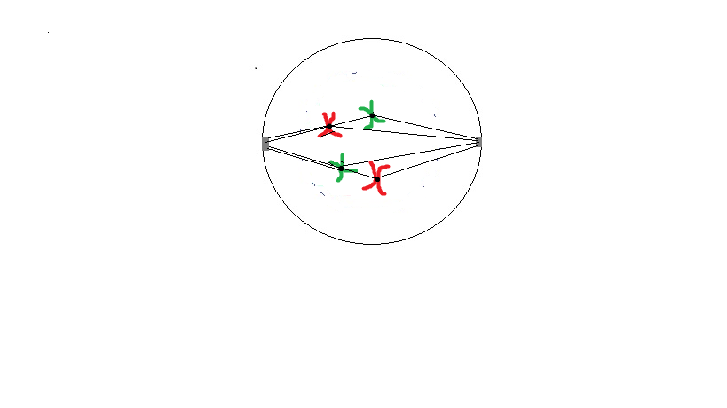
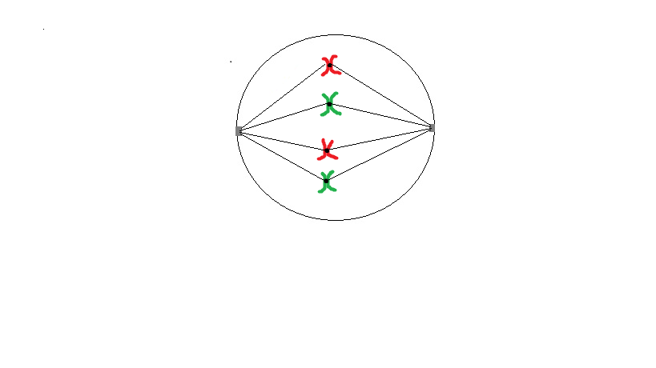
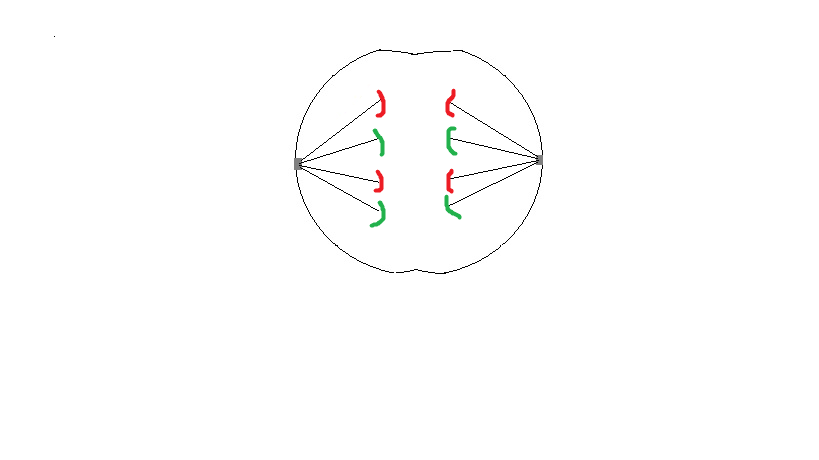

Getting enzymes and Proteins
Some text in my newly loaded page..
1.As a cell grows, its surface area to volume ratio decreases and any further growth must be from cell addition._______________allows single cell to become multicellular organisms and is responsible for the growth and development of body cells.
Cell division
Meiosis
2.In the _______________,the cell is either executing or preparing for cell division.In other for an organism to grow properly, the new cells that arise from cell division must inherit the same function as the parent cell.
Cell cycle
Life span
3.This is made possible through the passing on of ________
DNA
Materials
4.The DNA is found in condensed,organised structures known as _______________.The DNA of a cell is either condensed or uncondensed.
chromosomes
mitochondria
5.During cell division,chromosomes duplicate their DNA.the duplicated chromosome consists of two sister _______________ joined by a centromere.the human cells can be classified as either somatic cells or sex cells.Somatic cells contain homologous pairs (chromosomes that share the same genes) so they are diploid(2n).
chromatids
autosomes
6.Diploid is an example of a descriptor of a cells or organism's ______________________.
chromosome number
protein count
7. If a cell has homologous pairs they are diploid but if they contain only single(unpaired) chromosomes,they are _____________.Some organisms can also be polypoid.They contain sets of more than two homologous chromosomes (xn where x>2).
haploid
triploid
8.Sex cells or gametes have only unpaired chromosomes and so are haploid(n).Gametes are produced through meiosis where diploid cells are reduced to haploid sex cells(reductitonal division).In humans, the ________________________ undergoes meiosis to produce sperm cells whilst a primary oocyte undergoes meosis to produce ovums. During fertilization the male and female gamet(sperm and egg)fuse to form a zygote.
primary spermatocyte
spermatogenium
9.Humans have ___ chromosomes or 23 homologous pairs because 23 chromosomes come from the ovum and 23 from the sperm.Therefore,the reduced chromosome number (in gametes) ensures that the zygote has the proper amount of chromosomes(acording to the species).
22
46
10.The zygote(which is diploid) grows by mitotic division. Mitosis occurs in the somatic cells of ________________.Mitosis ensures tat a parent cll divides to produce genectically identical cells(daughter cells).This is required for the continuous replacement of old cells(repair and maintenance) and growth.
prokaryotes
eukaryotes
Mitosis is the division of the cells genectic material and nucleur content into complete separate sets.its purpose is to produce gectically identical daughter cells.Mitosis occus in four distinct phases:prophase,metaphase,anaphase and telophase(cytokenisis).
Prophase
The chromosomes are duplicated, the nucleur membrane disolves, centriole breaks off and migrate to the oppsite poles of the cell.Spindle fibres form.

Metaphase
The chromosomes line up along the equatorial plate.The spindle fibres are responsible for positioning the chromosomes.A spindle fibre is attached to each sister chromatid in each homologous pair(at the centromere).

Anaphase
The spindle fibres contract while the centomeres split apart, pulling the apart sister chromatids to opposite poles.Other fibres of the spindle apparatus simultaneosly lengthen to force the cell's poles away from each other(the cell is elongated).

Telophase
Last stage of mitosis!The sister chromatids moves to opposite cell poles.the spindle fibres break downwhile the nuecleus reforms as the chromosomes unravel.Special protein divide the cell by contracting.The cytoplasm and other cell organelles separate(cytokenisis).You now have two identical dipoid cells.